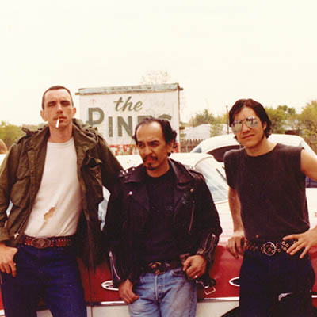
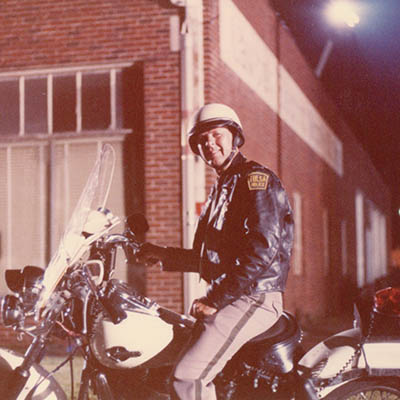
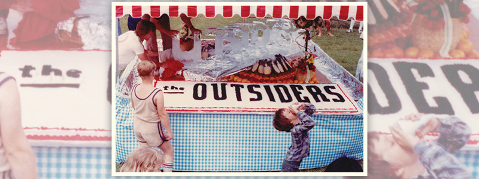
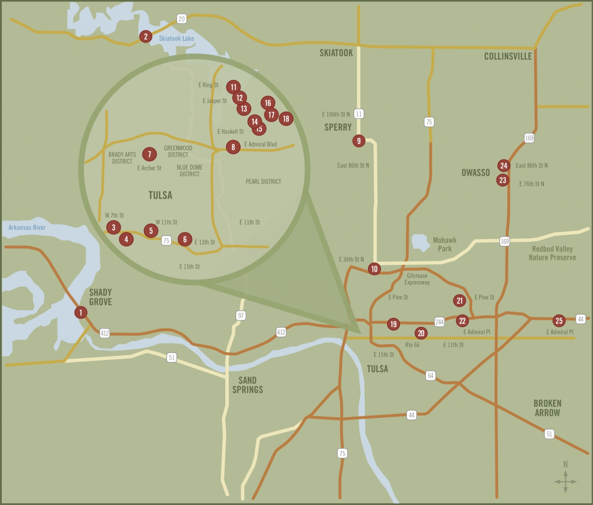

Making 'The Outsiders'
Cast and crew share memories of the film production

Photos by Joe Cervantez
In 1965, a 16 year-old Will Rogers High School student named Susan Hinton began writing a novel based on her observations of the social divide at Rogers. “The Outsiders” depicted the clash between rival gangs the Greasers and Socs, told through the eyes of Ponyboy Curtis, a Greaser orphan who lived in north Tulsa with his older brothers Darrel and Sodapop. The book was published in 1967, when Hinton was a freshman at the University of Tulsa, and quickly became a cultural phenomenon. Credited with starting the YA (Young Adult) genre, the book was soon required reading in classrooms across the country.
In 1982, director Francis Ford Coppola came to Tulsa to adapt the book into a movie, collaborating with Hinton on the script and assembling a large cast of mostly unknown young actors whose careers would be made by the experience: Matt Dillon, Ralph Macchio, C. Thomas Howell, Leif Garrett, Patrick Swayze, Emilio Estevez, Darren Dalton, Rob Lowe, Diane Lane and Tom Cruise.
Here, a handful of cast and crewmembers recall memories of working with Coppola, shooting in Tulsa, and having Hinton as their own “Greaser den mother.”

S.E. HINTON (author of “The Outsiders”): [I first realized the book was going to be a success] when Delacorte created a whole YA department built around “The Outsiders.” Until then there were children’s books and adult books. “The Outsiders” sales made them realize there was a whole new market to focus on… I am very happy the books are famous. I never have wanted to be famous myself. When I wake up in the morning I think “Is the coffee ready?” not “Wow, I’m S.E. Hinton.” Since I began writing it over 52 years ago, it seems like it’s always been part of my life.
RALPH MACCHIO (Johnny Cade): I read the book when I was twelve years old in school, in seventh grade English class. You know, if memory serves me correctly, I don’t think I read a book cover to cover before “The Outsiders,” outside of, like, “Green Eggs and Ham.” I was not a big reader, so I credit “The Outsiders” and S.E. Hinton for holding my interest enough at that adolescent age that I very much connected to the book and the characters.
DARREN DALTON (Randy): I’d read it in school and loved it, and once I realized what [the audition] was for, I got a lot more excited. I associated most with Ponyboy, because I was an artist, I was a writer. That was my first love, which is what I do now. I was writing poetry; I was someone who enjoyed sunsets. I didn’t have very much, you know, as far as our economic position.
GAILARD SARTAIN (Jerry): When Susie and I were at [Will Rogers High School] there was the Socs and the Greasers. That’s derived from life. I don’t know if it’s an economic split, but there were guys from the north side, and I mean we’re talking 1963 or ‘64 and before that. Rogers had kids from South of 11th Street and then north—there was a difference. From the waist up I was a Soc [laughs].
BRENT STICE (Stunt crew/the cop who shoots Dallas): Susie was a friend of mine … In junior high I was a Greaser, until ninth grade, when I played football. All the football players were jocks and Socs, so I started dressing different and wearing different colors, and I became a Soc. So I’ve been on both sides of the fence…
There was a big clash between Socs and Greasers. The Socs had money and the Greasers were raised poor and never got a chance. There were Greasers that played football, but they were still Greasers—the grease monkeys. It was really because of their hair. That’s why the book became such a big hit—she hit it exactly. I wish I’d of thought of it.
HINTON: Francis Coppola and I wrote the screenplay. Not a word of [credited screenwriter Kathleen] Rowell’s script was used. Because of an arbitration with the WGA, Francis was told he could claim co-authorship with Rowell but not me. He refused and quit the WGA for a while over it. He cut pages from a paperback copy of The Outsiders, outlined the action in one color, dialogue in another, narration in another. He cut these up, arranged into a script form, and handed it to me, saying “Cut it for me, Susie.” Which I did.
SARTAIN: My agent in California called me, told me they were shooting a film in Tulsa and I happened to be here at the time. Susie Hinton, we went to Rogers and TU together but we didn’t really know each other. It’s kind of serendipitous, everything just fell together. I didn’t have to read for it or anything. They probably figured out “well we don’t have to pay airfare for him so we’ll just go ahead and cast him.”
MACCHIO: I was 19 years old when I heard that they were casting. I was on a TV show called “Eight is Enough” at the time, so I was just sort of breaking in. I heard that they were making a movie of “The Outsiders,” and Francis Ford Coppola was going to be involved and direct it. I mean, “The Godfather” at that point was still my Bible of a movie, so it was everything I could possibly want it to be.
DALTON: [After two auditions in L.A.] they said “we’d love if you could come to New York.” This was the final stage of the casting. So I went to New York, they cut my hair and greased it back and put me in a leather jacket. They were going to eliminate everyone and have two people for each role. They wanted to do a read-through of the entire script in a recording studio where they’d record our voices. So we all sat around a big table with a couple of mics hanging down and we read the whole script.
C. THOMAS HOWELL (Ponyboy): I had read the book when I was a kid. I got the call from my agent to go meet Francis Ford Coppola, which started a series of probably six to eight weeks’ worth of auditions. That was a fun process. We read with everybody that ended up in the cast, and hundreds and hundreds of other actors. I was elated when I got the call.
DALTON: I was down to the wire for the Dally role, and I saw Matt Dillon come in. I was like, OK, well that’s the end for me because this guy—I’d just seen him in “Over the Edge” and he was ridiculously good, and he’s perfect for this role. So I thought well, this has been real and it’s been fun.
That night was actually the eve of my seventeenth birthday and we were in the studio past midnight, so when midnight came, Coppola, very wonderfully, got a couple of cakes and had a big party. It was a great night. I flew home the next day. I thought, “Okay, that’s it, I can’t wait to see Matt in the movie.” Maybe six or eight weeks after that, I was doing some theatre and my parents came to the rehearsal to pick me up. I was very excited because I had just gotten an offer to do some melodrama at some tiny theatre which would pay me $50 a performance. My father said “Well, I guess you won’t be able to go do ‘The Outsiders.’” They had called and offered me the role of Randy. I went back into the script and found the role and said, “This is fantastic!” A couple of weeks later I was in Tulsa.
MACCHIO: I went for the Johnny role, which is the role I felt I fit the most, just physically. Also, it’s arguably one of the best, most sympathetic characters in the book and the movie. I get to say “Stay gold, Ponyboy,” you know? It was the movie that everybody wanted to be in, from age 14 to 30. So I spent two days reading back and forth with other different actors, it was really like theater camp. A couple weeks after that, I heard—every day felt longer than the next—that I had gotten the part.
HINTON: One of the first things I did with Francis is drive around with him showing him potential locations. The ones I thought of in the book, the Circle Theater, the Admiral Twin Drive-In, were musts for me and he agreed.
HOWELL: Coppola was a real patriarch for everybody, the entire cast and crew. He’d make meals for us at lunchtime and spend a lot of time telling us stories about other films that he made and other actors that he worked with. We were all raw and young and very impressionable, so it was a good time for us to have a mentor like Coppola. I mean, the careers that were made because of that movie are amazing, and I think a lot of that had to do with the start that we all had.
SARTAIN: Coppola was very polite and welcoming. He didn’t really direct in the sense of “move to the right” or “louder.” In fact, he directed the whole thing from an airstream trailer. And he’d come out every once in a while and say “hello” and go back in. Most of his attention was focused on the cast—the guys. No criticism, no nothing. Just “do it, fine, good, cut, print.”

MACCHIO: Francis wanted to really create the feeling of the class differences, so he had the Greasers hanging out together, and we were all on the same hotel room floor, and the Socs had nicer rooms. They had leather-bound scripts while we had old, denim notebooks. We were picked up in like a mini-van from the airport, while the Socs had cushy rides. Coppola had a very theatrical way of working. We spent two weeks really improvising things, doing different scenes, doing acting exercises. He was very much about the camaraderie, so when we shot the movie, we felt like we had been with each other a little bit. But he definitely kept us separated.
DALTON: He was a very smart guy, especially dealing with young people. I flew in for the whole rehearsal period, which was a month or so before the filming began. He gave the Socs—myself, I was the only Soc cast at the time—he gave me a beautiful suite on the 16th floor of the Excelsior [Editor’s note: The Excelsior is now the Doubletree downtown] and the Greasers were all on the sixth floor, regular rooms. He gave me a wonderful leather-bound binder for the script, whereas the Greasers got like kind of a denim, three-ring cardboard thing. He’d give us the pick of whatever type of sweats we wanted; we got nice, cool sweats and all the Greasers were in grey. During the rehearsal period we played football against each other. Smartly, Coppola didn’t bring Leif Garrett [who played the Soc Bob] in until just days before filming. So, I had a chance to sort of bond with the people and become more like my role, which is someone who is more of a middleman. And Leif came into a group of people that were already established. It was Leif Garrett, you know? I mean, the guy came in acting like a teenage rock star and a lot of us kind of looked down our noses at it. The dynamic worked quite well, I thought.
HOWELL: It was all fraternal. Everybody was super close and spent a lot of time together, and I think that carried over. We all were cut from the same cloth, and I think there’s this, I don’t know, pride that goes with it—at least for me, anyway.
MACCHIO: I’ll never forget, about a week into rehearsal, [Coppola said about me], “He’s too Long Island! He’s too together, he’s too happy family.” He advised me, “Why don’t you just spend the night outside? Sneak outside, take a few dollars with you, and that’s all you get to spend for two days.” And I did that, ‘cause this was literally the Godfather giving me notes. I was very taken aback at first, like “Boy, he thinks I suck,” but he gave me stuff to think about and it really helped—walking in the shoes of a kid who’s got no place to go, and nowhere to sleep, and his parents aren’t there to back him up, and he’s got a few dollars in his pocket, and that’s it.
DALTON: He had us go spend the night at a family’s house that mirrored who we were in the movie. I was not raised like a Soc, I was much more raised as a Greaser. I remember going and staying with a family who lived in a very nice area in Tulsa, had a beautiful house. The thing that really blew my mind was that they had cable TV. Coppola did everything possible to make it easy for us to be our character and be comfortable in front of the camera.
STICE: Because I was doing stunts, the cast really—they like the stunt guys. They were all great. Patrick Swayze was more mature than the other boys. He had been around a little bit. Kind of quiet, very nice. The nicest was Ponyboy, C. Thomas Howell. He was just a kid, and showed a lot of respect and just was nice as could be. Matt Dillon’s parents were there with him. Course, he was just a teenager. He’s nothing like his character. Super, super good kid. I didn’t know much about Tom Cruise—I didn’t really interact with him very much. Oh, and the Karate Kid, Ralph Macchio. Another super kid. Very intelligent. You can see how they got these parts. The kids were pretty sharp.
SARTAIN: I mean, what an incredible cast of young guys, young actors. They hadn’t really done much; I mean Tom Cruise still had old teeth. [laughs] It was pretty amazing—all those guys have gone on to other things.
DALTON: The people in Tulsa were so fantastic, it’s great stock there—people are proud of where they’re from. They really embraced us and took care of us. But there were a couple of situations I remember—I remember when I was at Cain’s with Matt and at some point we had to leave because the girls were crazy. When the girls are crazy, the guys don’t appreciate it so there were some rumblings of some things happening, and we were asked to leave. But that was such an isolated thing, everyone that worked on the movie that was from Tulsa was fantastic. There were a lot of pretty girls, I can tell you that. And for someone who was 17… It was a fun time.

STICE: The scene where I shoot [Matt Dillon’s character] Dallas, I think we did it five or six times. I know Matt was getting tired because he was having to shoot at us and then crawl … Not to get off subject, but I kept all those blanks and gave them to my daughter, who’s now a schoolteacher. She was pretty young, about 10 or 11 years old, and she took them to her junior high and sold them for a dollar a piece. And, of course, all the teenage girls hated me for killing Matt Dillon. Anyway, Matt was a good sport because he had to keep doing it, kept doing it, kept doing it. It was exciting. I was proud that we didn’t have to shoot the scene over and over because of me.
HINTON: Loved working with the boys. They were such goofy, normal teens who became focused artists in front of the camera. We are good friends to this day… We bonded very strongly and I ran lines with them to work on edits. We had two weeks rehearsal time, a luxury not many actors get.
MACCHIO: S.E. Hinton, you know, Tulsa’s own S.E. Hinton—she was there all the time. Obviously, this was her baby. She wrote this book when she was 16 years old. I don’t think you could live in Tulsa without having that information. You gotta know the Pledge of Allegiance, and that S.E. Hinton wrote “The Outsiders.”
DALTON: Susie was there the whole time. I love her and keep in contact with her now, she’s just a wonderful person. She was such a combination of mother and truck driver, you know, it was fantastic. We really got along well. We were playing Ping-Pong, playing pool, things like that. She was right there in the middle of it. She’s got some bite, you know? She’s wonderful, but I don’t want meet her in a dark alley—she’s a tough chick. That goes a long way, I thought that was part of her charm—she was very motherly to all of us on the set in the best way.
HOWELL: She called herself “the Greaser den mother.”
SARTAIN: I didn’t have any scenes with her but she was always there. Coppola would refer to her quite a bit, actually. But I wasn’t privy to all that because—well, to quote Susie, “That was then and this is now.” But she and Coppola were always in communication.
HINTON: Francis paid me to be on the set—you see I have a credit as a consultant, and he asked me to be a nurse. I chose to be the nurse in Dallas’ room. Matt Dillon and I had been close friends ever since the filming of Tex—the director, Tim Hunter, also wanted me on set—and I knew that scene would be easy to play. We were so used to hassling each other. It was hard for us to keep a straight face. I did hit my marks, say my lines, and exit with just a couple of takes.
STICE: “The Outsiders” is something that stuck with me. It stuck with my kids. And you know, there’s a lot of people in Tulsa that were in that movie who will tell you the same thing. It was just exciting to be in that movie, to be in a real movie.
DALTON: I think it’s a wonderful thing that we’re going to keep this part of Tulsa alive [through “The Outsiders” house museum]. It’s been an amazing part of my life; The people who love the movie and book are such true fans. Other than the very occasional person coming up trying to kick my ass because I tried to drown Ponyboy [laughs], it’s been fantastic because everybody really loves the movie. And I can see why, because it’s an important, nostalgic landmark.
HOWELL: The memories that I have from the movie were so good, that’s the motivation behind wanting to come and support the [house museum fundraiser] now. It was a great time, a great group of people, and I’m really proud to have been part of it.
MACCHIO: It was one of the highlights of my life and career. Working on the film was just very special. And then, on top of that, look at how many careers it launched. Really, pretty amazing.
HINTON: The novel sold more last year than it ever has, and any movie sales were for readers and teachers. I love the movie, especially “The Complete Novel” version—I believe Francis was the only director who went back and re-edited a film because the fans of the book asked him to—and we could not have had a better cast.

Tulsa plays itself
Mapping "The Outsiders" across Green Country
Francis Coppola’s film is littered with famous Tulsa landmarks, as well as many more obscure locations around town. Here’s a starting point for finding the city within the film, courtesy of Zach Matthews. To see specific cross streets and structures, visit Matthews’ Google map at bit.ly/outsidersmap.

1.) Francis Ford Coppola’s residence while filming in Tulsa
2.) Scene of Windrixville Church fire, now underwater
3.) Hospital where Johnny Cade Dies
4.) Convenience store Dally robs and then gets shot
5.) Former location of the very first opening scene, filmed near then-Bowen Lounge. Dally stood on this “Corner of Dreams” waiting to do “nothing legal”
6.) Corner across the street from Boston Avenue United Methodist Church, where the bus mirror almost knocked Two-Bit in the face
7.) Dally and Pony pulled over by police after the fire
8.) “What’s the movie about” — the boys walk by what is now Topeca’s coffee roastery on North Peoria and East Admiral
9.) Rexall Drugstore in Sperry, still standing
10.) Former location of Dairy Queen, where Dally treats Pony and Johnny before the church burns down
11.) Lowell Elementary School, which at the time of filming served as offices for American Zoetrope productions
12.) Dally is killed by police
13.) Crutchfield Park, where Johnny and Pony were attacked by the Socs in the tuff blue Mustang. The original monkey bars are gone. The fountain was put in place for the film and removed when they finished
14.) Rumble with the Socs
15.) Johnny Cade’s house
16.) Socs chase Ponyboy down the alley behind the Curtis brothers’ house, jump him, and cut his hair with a knife
17.) The Curtis’ Brothers’ Home, AKA The Outsiders House, now being renovated and made into The Outsiders House Museum (see page 20)
18.) Socs throw sticks at Ponyboy as he walks the tracks
19.) Circle Cinema
20.) Will Rogers High School
21.) The Pines Drive-In
22.) The Admiral Twin Drive-In, which was the location for many scenes in the Outsiders including when Dally and Ponyboy snuck in and met Cherry Valance for the first time
23.) Two-Bit and Ponyboy hitchhike down Main St. Owasso
24.) Pony talks with the Socs
25.) Former Location of Buck Merrill’s (Tom Waits) Road House
.jpg)
.jpg)